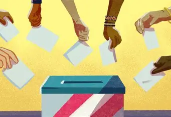

Las Elecciones Generales para presidente de la República, vicepresidentes, senadores y diputados del Congreso de la República y representantes peruanos ante el Parlamento Andino (EG 2026) fueron convocadas por la Presidencia de la República mediante el Decreto Supremo n° 039-2025-PCM.
¿ES IMPORTANTE TU VOTO?
El voto es importante porque permite a los ciudadanos expresar sus opiniones y decidir el rumbo político de su país. También sirve para exigir responsabilidad a los políticos, ya que deben representar los intereses del pueblo. Además, ayuda a proteger los derechos y libertades, al permitir elegir a quienes mejor reflejen los valores de la sociedad.
